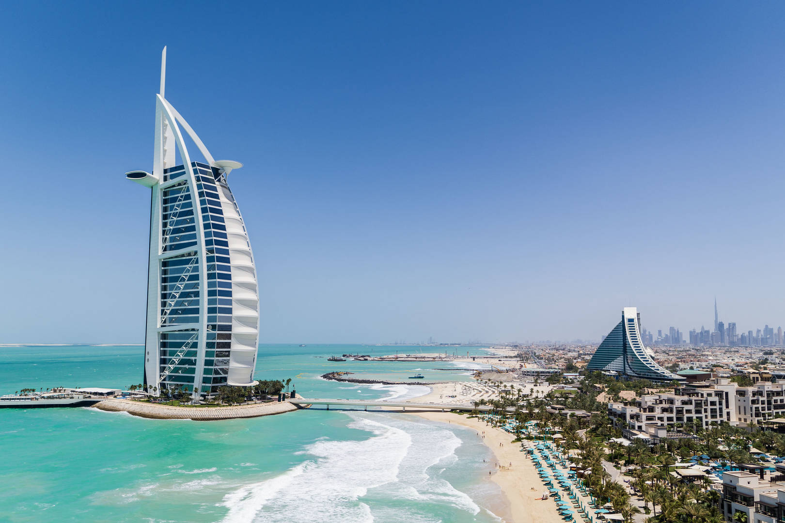
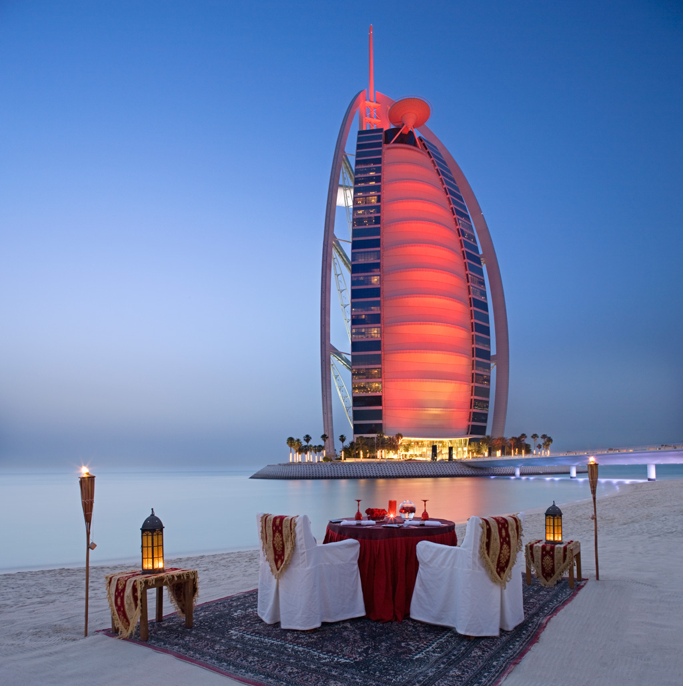
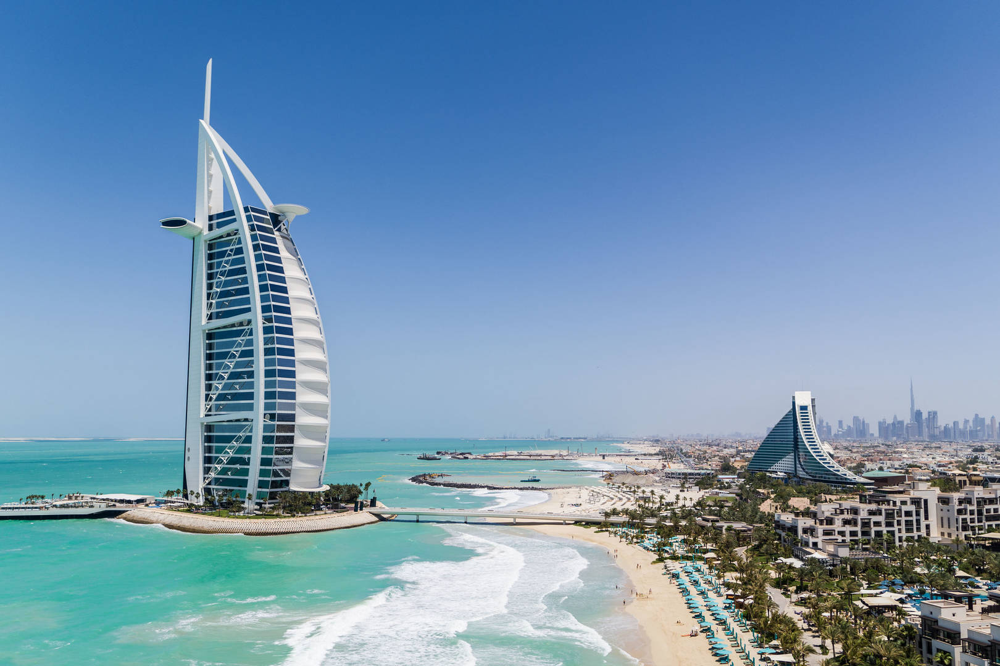
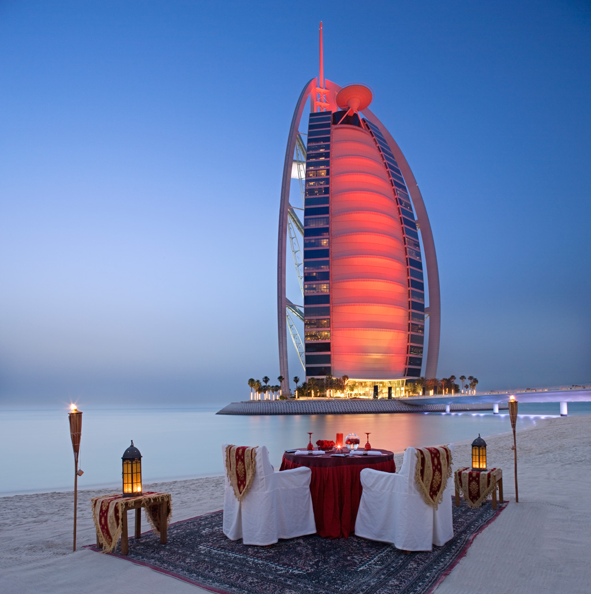
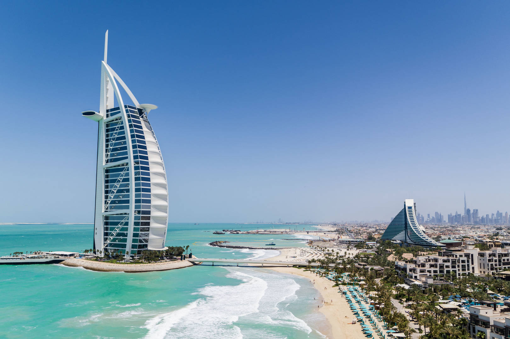
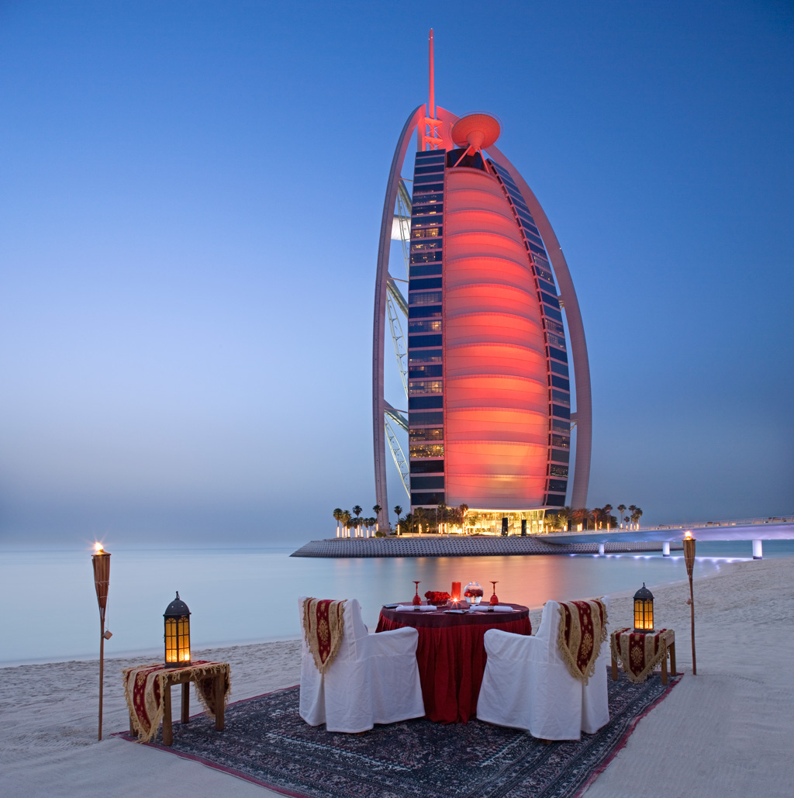

The Burj al Arab (translation: Arabian Tower), is a luxury hotel that stands on an artificial island nearly 300 m from the Jumeirah Beach in Dubai, UAE.
Standing at 321 m, it is the third tallest hotel in the world and one of the most expensive, costing an estimated 7.8bn dollars.
The building is notable for a number of complex engineering and construction feats.
The artificial island that was constructed needed to be built low enough to give the impression that the building was floating on water.
The reclamation of the land from the sea took 3 years, as engineers created a ground/surface layer of large rocks.
To avoid the risk of flooding, perforated concrete blocks were mounted on the bedrock in a honeycomb pattern designed to act as a giant artificial sponge and reduce the wave impact.


 


